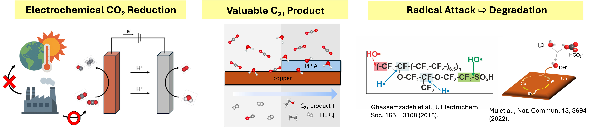
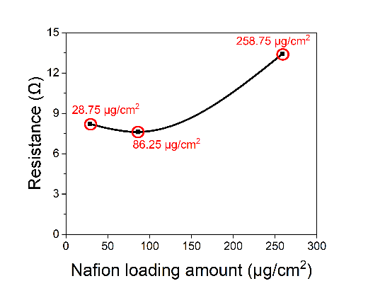
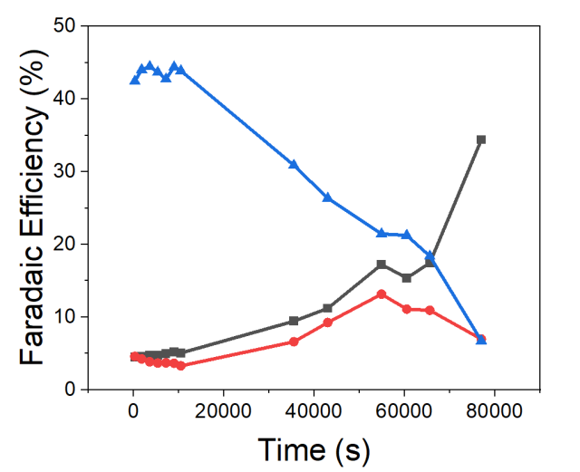

My CO₂ reduction research asked how the ionomer surrounding a Cu catalyst affects product selectivity—and how that interface changes during extended operation.
Why is this research needed?

The electrochemical CO₂ reduction reaction (CO₂RR) converts CO₂ into valuable chemicals. Among metal catalysts, copper is distinctive in its ability to produce substantial amounts of multicarbon (C₂+) products.
Previous studies have reported that coatings of perfluorosulfonic acid (PFSA) ionomers, such as Nafion, can enhance C₂+ production. However, fuel-cell research has shown that hydroxyl radicals (•OH) can degrade PFSA membranes, including Nafion. Hydroxyl-radical generation has also been reported during CO₂RR.
Together, these findings motivate a question: could hydroxyl radicals generated during CO₂RR degrade the PFSA coating and affect the selectivity and stability of the catalyst–ionomer interface?
Results
Finding a favorable coating condition
300 nm Cu with 86.25 μg cm⁻² Nafion gave the most favorable C₂+ selectivity among the tested conditions. Higher Nafion loading increased charge-transfer resistance.


Selectivity declined during extended operation

Gas-phase C₂+ FE fell from 42.44% to 6.73%, while H₂ FE rose from 4.49% to 34.40%. Liquid products were not quantified in this run.
Probing changes in the ionomer

Coumarin probing and XPS were used to investigate possible Nafion degradation. The link between hydroxyl radicals, ionomer damage, and performance loss remains to be confirmed.
View research poster